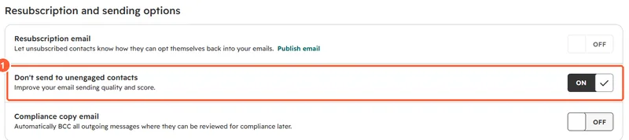
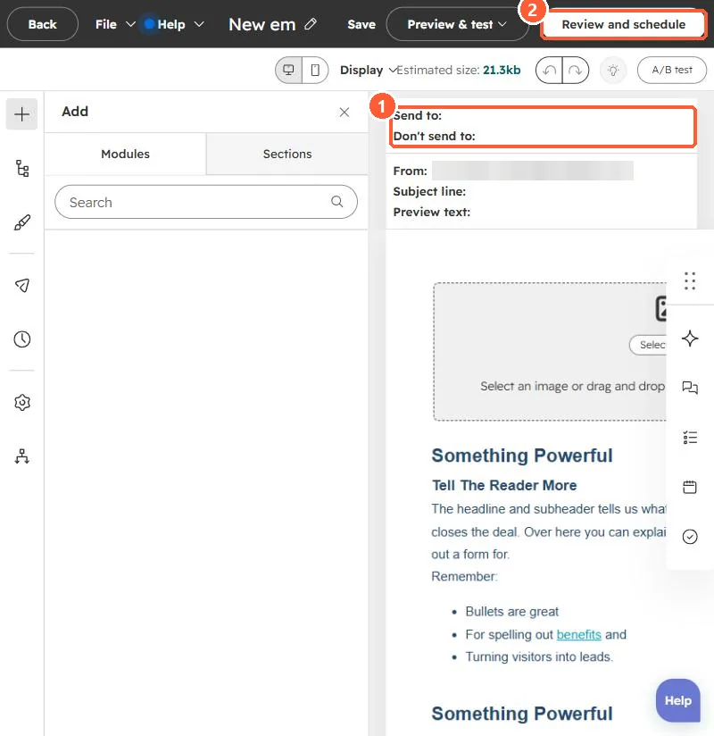
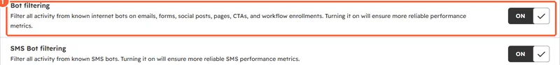
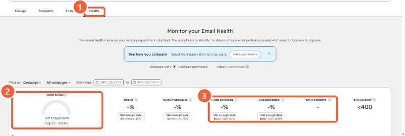

Short answer
HubSpot quietly drops some recipients from every marketing email. Don't send to unengaged contacts is on by default and skips anyone who never engaged and ignored your last 11 emails, or who engaged once but ignored the last 16. Contacts who hard bounced are skipped too, quarantined contacts are skipped, and a send with too many bounces or spam reports can be stopped partway. Leave the protections on, clean bounced and unengaged contacts out of your segments, authenticate your sending domain, and judge results on clicks rather than opens.
1. Why fewer people got your email
The number that receives an email is often lower than the segment size. The usual reason is graymail suppression: mail that people opted in to but never open. HubSpot defines an unengaged contact with the Sends since last engagement property:
- Never engaged with any of your marketing emails, and did not engage with the last 11 you sent them.
- Engaged in the past, but did not engage with the last 16 you sent them.
The account default lives in Settings, Marketing, Email, Subscriptions, under Resubscription and sending options (1). It is on in a new portal. Turning it off for the whole account needs Marketing Hub Starter, Professional or Enterprise.


Each email also has its own switch in the editor's send options. The editor shows who is included and excluded at the top (1), and the switch is part of the options you see before Review and schedule (2).


One catch for automated emails: if you change the setting after the email is published, the change is not applied, so set it before you publish.
2. Resend to people who did not engage
HubSpot's own re-engagement method uses an events filter in a segment, not a property:
- Go to CRM, Segments and create an active contact segment.
- Add a filter: Marketing emails, pick the email, then Email was sent to contact but they didn't click on a link. Use the matching open filter if you want non-openers instead.
- Clone the original email, change the subject line and preview text, and send the clone to the new segment.
Two things to keep in mind. The clone still respects the unengaged setting, so the people who ignore everything will not get it either way. And every resend to people who ignored the first one adds to graymail. Do it for emails that matter, not every newsletter.
If you do need to reach the excluded contacts once, HubSpot's documented route is to clone the email, turn the setting off on the clone, and send it to a segment of the people who were left out.
3. Bounced contacts
HubSpot does not send to contacts who have previously bounced for a permanent reason. They show on the email's Not sent list and the contact record carries a Contact has bounced alert. An address that never bounced in your account is still sent to, unless it has bounced across other HubSpot accounts (a global bounce).
To unbounce a contact whose address you have confirmed is correct, open the record, click Unbounce, tick I confirm that this email address is correct, and confirm. You need Super Admin or marketing email permissions. You have to go through HubSpot Support instead when:
- you have unbounced more than 1,000 contacts, or more than 2% of the contacts in the account, this month,
- the contact has been unbounced before, or
- the address is a global bounce.
Emails that were dropped while the contact was bounced do not go out after the unbounce. Clone and resend them.
Bounced contacts you are still paying for. A hard-bounced contact can still be a marketing contact. In Contacts, filter on Email hard bounce reason is known (or Marketing emails bounced is greater than 0) plus Marketing contact status is marketing contact. Select them and use More, Set as non-marketing contacts. With Marketing Hub, Account & Billing, Marketing Contacts, Clean up contacts groups unsubscribed and bounced contacts for you. The change takes effect on your next marketing contact update date.
4. Quarantined contacts
HubSpot quarantines contacts that put your sending at risk. Its KB lists four causes:
- They caused a high hard bounce rate on several emails, or a critically high rate on one.
- They generated spam complaints or widespread bounce reports from other email services.
- Their address has a history of hard bounces across HubSpot (global bounces).
- They came in through suspicious form activity. If many appear at once, check form spam settings.
Find them in the default Quarantined Contacts segment under CRM, Segments, or build your own with Quarantined Emails is known. My Enterprise demo portal has never had a quarantined contact and the default segment does not appear in its list, so if you search and find nothing, that is a good sign.
You cannot take a contact out of quarantine by hand. They have to re-engage: reply to a one-to-one email from a connected inbox where they are the only recipient, or submit a HubSpot form.
5. When HubSpot stops a send
HubSpot's email protection system can stop a marketing email partway when it builds up a high share of hard bounces, spam reports or unsubscribes, or is flagged for phishing or abusive content. HubSpot does not publish the thresholds. The email is not sent to the remaining recipients.
Before you resend, HubSpot asks you to clean the recipients: remove contacts without opt-in consent, check that imported contacts were not already opted out, remove contacts who have not heard from you in over six months, and optionally run the list through an email validation tool. Then use Send to remaining engaged contacts in the stopped email notification. It creates a clone with unengaged contacts excluded, which you send from the editor.
Treat a stop as a warning about the list, not a glitch. Repeated stops can lead to contacts being quarantined or to a sending suspension for the account.
6. Read the numbers correctly
HubSpot's definitions:
| Metric | Out of | Use it for |
|---|---|---|
| Open rate | Recipients who received the email | Trend only. Privacy features and scanners distort it. |
| Click rate | Recipients who received the email | Comparing emails sent to different lists. |
| Click-through rate | Recipients who opened the email | Testing content among people who opened. |
An open is counted when images load, or when someone clicks a link without loading images. That is why opens are the least reliable number. Bot filtering removes suspected bot activity, including security scanners, privacy filters such as Apple Mail Privacy Protection, and corporate screeners such as Mimecast. It is on by default, under Settings, Tracking & Analytics, Tracking Code, Advanced Tracking (1):


Filtered numbers are usually lower than unfiltered ones. Each sent email's performance page shows whether bot filtering was on for that send and lets you see both versions.
7. Deliverability checklist
- Authenticate your sending domain with SPF, DKIM and DMARC in HubSpot's domain settings. Without it, HubSpot sends using a variable domain in the From address, which can look suspicious to the receiving server. See domains in HubSpot.
- Never send to bought or scraped lists. They can contain spam traps, and a segment that hits one can be quarantined.
- Keep graymail suppression on and set bounced contacts to non-marketing.
- Use real opt-in. See double opt-in and subscription types.
- Warm up new domains. After moving to a new domain or email provider, HubSpot recommends starting with low volume and increasing over 30 to 60 days.
- Watch the Health tab. Marketing, Email, Health (1) gives a score (2) and tracks hard bounces, unsubscribes and spam reports against a benchmark (3). It needs some send history before it shows a score.


8. What to have in place for 2027
The mailbox providers' rules are not new, but they are enforced now and they are the reason a list that delivered fine a few years ago can land in spam today.
- Gmail (since February 1, 2024): anyone sending more than 5,000 messages a day to Gmail accounts needs SPF, DKIM and DMARC, one-click unsubscribe on marketing messages, and a spam rate in Postmaster Tools below 0.3%. Google's target is below 0.1%.
- Outlook.com, Hotmail and Live (since May 5, 2025): the same three authentication checks for senders over 5,000 a day. Non-compliant mail goes to Junk first and can then be rejected with
550; 5.7.515. - Do not send from a free mailbox address. Google says Gmail will use a DMARC quarantine policy, so a marketing email with a gmail.com From address can go to spam. Send from your own authenticated domain.
- HubSpot changed the graymail rule. Older guides, including an earlier version of this page, say 11 emails for everyone. The current KB splits it into 11 for contacts who never engaged and 16 for contacts who engaged before.
- Report on clicks, replies and meetings. Opens keep getting less reliable as more inboxes prefetch images or scan links.
Keep the unsubscribe link in your email footer, and check with your sending domain setup that SPF, DKIM and DMARC all pass. The rest is list hygiene.
Common questions
My open rate dropped overnight and deliveries did not change. Is HubSpot's tracking broken?
A HubSpot Community thread from September 2026 had exactly this: opens excluding bots fell from about 17% to 3 or 4% between two weekly sends, with the same 180 deliveries. The poster later found the whole drop came from Gmail recipients and was sending without an authenticated domain. Replies pointed to inbox placement, not tracking. Check whether clicks and replies dropped too, compare by mailbox provider, set up Google Postmaster Tools, and authenticate the domain.
Should I turn off Don't send to unengaged contacts to reach my whole list?
Usually no. Mailbox providers move low-engagement mail to spam, which lowers placement for the people who do read you. If you must reach the excluded group once, clone the email, turn the setting off on the clone only, and send it to a segment of those contacts.
Can I remove a contact from quarantine?
No. The contact has to reply to a one-to-one email where they are the only recipient, or submit a HubSpot form.
A contact says they never got the email but they are not bounced. Why?
Check whether they were unengaged at send time (the Sends since last engagement property), unsubscribed from that subscription type, quarantined, or on the email's Not sent list. If none apply, the email was delivered and the problem is on the receiving side, usually a spam folder or a corporate filter.
Click rate or click-through rate?
Click rate when comparing emails sent to different lists, because it does not depend on opens. Click-through rate when testing content among people who opened.
Sources
- HubSpot Knowledge Base: Understand graymail and avoid sending email to unengaged contacts
- HubSpot Knowledge Base: Run a re-engagement email marketing campaign
- HubSpot Knowledge Base: Send emails to contacts who previously bounced
- HubSpot Knowledge Base: Set contacts as non-marketing
- HubSpot Knowledge Base: Understand and manage quarantined contacts
- HubSpot Knowledge Base: Marketing email send was stopped
- HubSpot Knowledge Base: Analyze marketing email performance
- HubSpot Knowledge Base: Understand bot filtering in marketing email analytics
- HubSpot Knowledge Base: Understand email sending in HubSpot
- HubSpot Knowledge Base: Improve email deliverability
- HubSpot Knowledge Base: Understand spam traps and email blocklists
- Gmail Help: Email sender guidelines
- Microsoft: Outlook's new requirements for high-volume senders
- HubSpot Community: Did marketing email open tracking suddenly change in HubSpot?
- HubSpot Community: Resending email to non openers of original email
- HubSpot Community: Click rate vs click-through rate